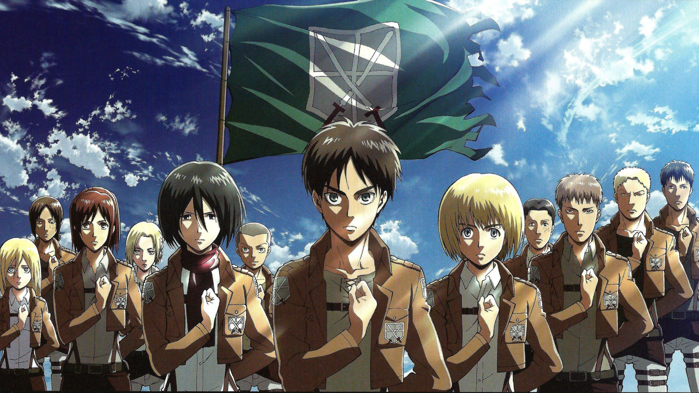

Attack on Titan (Shingeki no Kyojin)
2013 - 2023 | Ação, Drama, Mistério, Pós-apocalíptico
Por que está aqui?
Attack on Titan foi um dos animes que mais mexeram comigo.
A intensidade da história, a brutalidade do mundo em que vivem e os dilemas morais que surgem ao longo dos episódios me prenderam do início ao fim.
Cada temporada parecia me arrancar uma parte da alma — e eu amava isso.